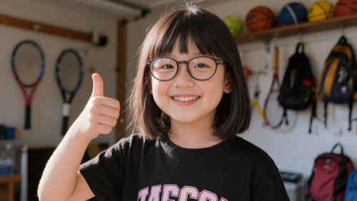
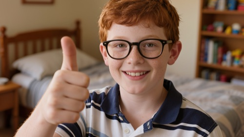
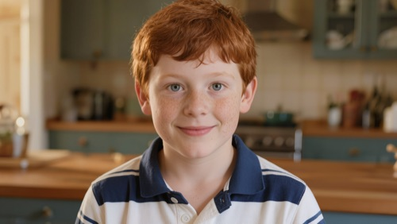
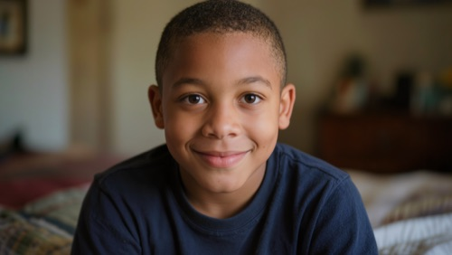
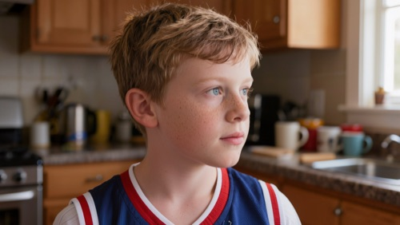
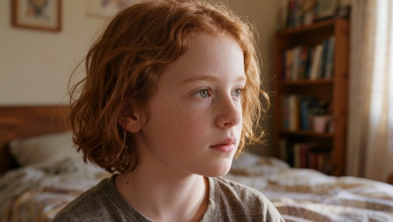
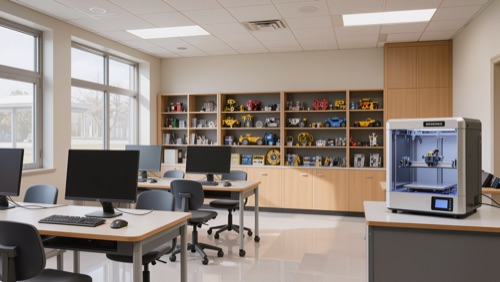
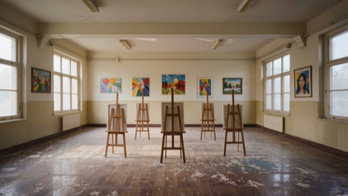

SUBJECT FEED
CAMERA OFFLINE
Press START CAMERA to begin audit
Press START CAMERA to begin audit
idle
MODEL OUTPUT
INSTANT
—
awaiting input
threshold: 0.50
◆ LOCKED · TODO #2
10-SECOND VERDICT
—
finish the counting loop to unlock
ROLLING ATTENTION
—
waiting for your code
> EVENT LOG
1Connect model
2Rolling average
3Low-attention alert
NEEDS COMPILE
|
Python runtime loading…
⌘↵ to compile
Reset will wipe your current code. Continue?
HINT · LEVEL 1
> STDOUT
Sample of the images used to train hackley-attention-detector-v0.01.
Five images per class, pulled from the vendor's training set per System Card §3.
cls_alpha
The learner exhibits the [maximum]-level of the [REDACTED] and emits the forward-directed gaze along with the affirmative hand-sign.
n=48 training samples


cls_beta
The learner maintains the frame-forward posture without the supplementary hand-signal.
n=48 training samples


cls_gamma
The subject's head-orientation deviates from the perpendicular-to-frame axis.
n=48 training samples


cls_delta
No learner-presence is detected within the frame.
n=48 training samples


cls_epsilon
The learner's eyes are in a closed or near-closed state [translation artifact: "close to apparatus"].
n=28 training samples